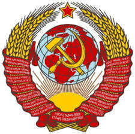

კომუნიზმი
ნიკოლოზ კიკილაშვილი
კომუნიზმი
საზოგადოებრივ-ეკონომიკური წყობა, დაფუძნებული წარმოების საშუალებების საერთო საკუთრებაში ფლობაზე. კომუნისტური საზოგადოება ემყარება პრინციპს: „თითოეულისაგან — მისი უნარის მიხედვით, თითოეულს — მოთხოვნილების მიხედვით“. კომუნიზმი მიიღწევა სოციალური კლასების, ფულისა და სახელმწიფოს გაუქმებით. მე-19 საუკუნის გერმანელმა ფილოსოფოსებმა კარლ მარქსმა და ფრიდრიხ ენგელსმა ჩამოაყალიბეს ფილოსოფიური და იდეოლოგიური მიმართულება, რომელსაც შემდგომ მარქსიზმი ეწოდა. მარქსმა და ენგელსმა ისტორია განიხილეს როგორც საზოგადოებრივი-ეკონომიკური ფორმაციების კანონზომიერი ცვლილება. მათი აზრით, კომუნიზმის დამყარების წინაპირობას უშუალოდ კაპიტალიზმის პირობებში არსებული წინააღმდეგობები და კლასობრივი ანტაგონიზმი წარმოშობს. როდესაც კაპიტალიზმი მიაღწევს თავისი განვითარების უმაღლეს სტადიას — იმპერიალიზმს — პროლეტარიატი აჯანყდება ბურჟუაზიის წინააღმდეგ და დაამხობს მის ბატონობას, რის შემდეგაც ძალაუფლება გადავა მშრომელი ხალხის ხელში.
მარქსის მიხედვით კაპიტალისტური სისტემიდან კომუნიზმში გადასვლა ხორციელდება თანმიმდევრულად, გარდამავალი პერიოდის გავლით, რომელსაც სოციალიზმი ეწოდება. ამ დროს შენარჩუნებულია ფული და სახელმწიფო, თუმცა ახალ საზოგადოებრივ-ეკონომიკურ ფორმაციაში ისინი ახალ დანიშნულებას იძენენ. სოციალიზმის განვითარების პროცესის პარალელურად ქრება აუცილებლობა ფულისა და სახელმწიფოს არსებობაში, რის შემდეგაც საზოგადოება გადადის განვითარების ახალ საფეხურზე — სრული კომუნიზმი. რუსმა ფილოსოფოსმა პეტრე კროპოტკინმა ჩამოაყალიბა იდეოლოგია, რომელსაც ანარქო-კომუნიზმი ეწოდა. კროპოტკინი სახელმწიფოს განიხილავდა როგორც ძალადობრივ ინსტიტუტს, ამიტომაც აუცილებლად მიიჩნევდა მის გაუქმებას და კომუნიზმის დამყარებას ყველანაირი გარდამავალი ეტაპის გარეშე.
მე-20 საუკუნე
მე-20 საუკუნეში კომუნისტური პოლიტიკური ძალები ხელისუფლებაში იყვნენ მსოფლიოს ბევრ ქვეყანაში, მათ შორის ოქტომბრის რევოლუციის შემდეგ საბჭოთა კავშირში, რომელიც ცივი ომის დროს იყო სოციალისტური ბანაკის მეთაური და ამერიკასთან ერთად ითვლებოდა ერთ-ერთ ზესახელმწიფოდ. 1980-იანი წლებისთვის მსოფლიოს მოსახლეობის დაახლოებით ერთი მესამედი სოციალისტურ სახელმწიფოში ცხოვრობდა. საბჭოთა კავშირის დაშლის შემდეგ კომუნიზმის პოზიციები მსოფლიოში მკვეთრად შესუსტდა. ერთ-ერთი ბოლო ვინც კომუნისტურ იდეოლოგიაზე უარი თქვა, ჩრდილოეთ კორეა იყო, სადაც 2009 წელს, კონსტიტუციიდან ოფიციალურად ამოიღეს კომუნიზმი, როგორც სახელმწიფო იდეოლოგია. კომუნისტებმა გარკვეულ სიძლიერეს მიაღწიეს დასავლეთ ევროპის ქვეყნებში. ევროკომუნიზმი არის ტერმინი რომელიც 1970–იანი წლებიდან გამოიყენებოდა ევროპელი კომუნისტების მისამართით, რომლებიც მთლიანად ან ნაწილობრივ ემიჯნებოდნენ საბჭოთა კავშირს. კომუნისტური მოძრაობა ასევე საკმაოდ ძლიერია ლათინურ ამერიკაში.